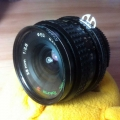

shengxcx2014-07-05 21:154.08 分
操作性 4.50耐用性 4.00性价比 3.50解像力 4.50色彩还原 4.00机械结构 4.00
影作坊2013-11-12 16:264.25 分
操作性 4.50耐用性 4.00性价比 4.00解像力 4.50色彩还原 4.50机械结构 4.00

nikonln2010-12-06 15:574.92 分
操作性 5.00耐用性 5.00性价比 5.00解像力 5.00色彩还原 4.50机械结构 5.00
无事老2008-05-15 11:354.83 分
操作性 4.50耐用性 5.00性价比 5.00解像力 4.50色彩还原 5.00机械结构 5.00
老桃2006-12-31 17:014.58 分
操作性 5.00耐用性 5.00性价比 4.50解像力 3.50色彩还原 4.50机械结构 5.00
siva2006-05-14 18:204.17 分
操作性 4.50耐用性 4.00性价比 4.50解像力 4.00色彩还原 3.50机械结构 4.50
经典是硬道理2004-11-14 15:524.17 分
操作性 3.50耐用性 4.00性价比 4.50解像力 4.50色彩还原 4.00机械结构 4.50
超级兔子2003-12-18 14:024.58 分
操作性 4.00耐用性 5.00性价比 5.00解像力 4.00色彩还原 4.50机械结构 5.00
格瓦拉2003-09-29 16:374.5 分
操作性 4.50耐用性 4.50性价比 5.00解像力 4.50色彩还原 4.00机械结构 4.50
cameramd2003-04-18 13:194.5 分
操作性 4.50耐用性 4.50性价比 5.00解像力 4.50色彩还原 4.00机械结构 4.50